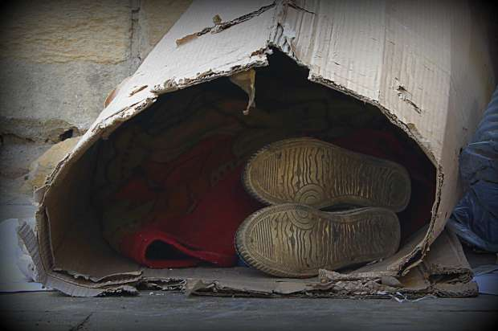
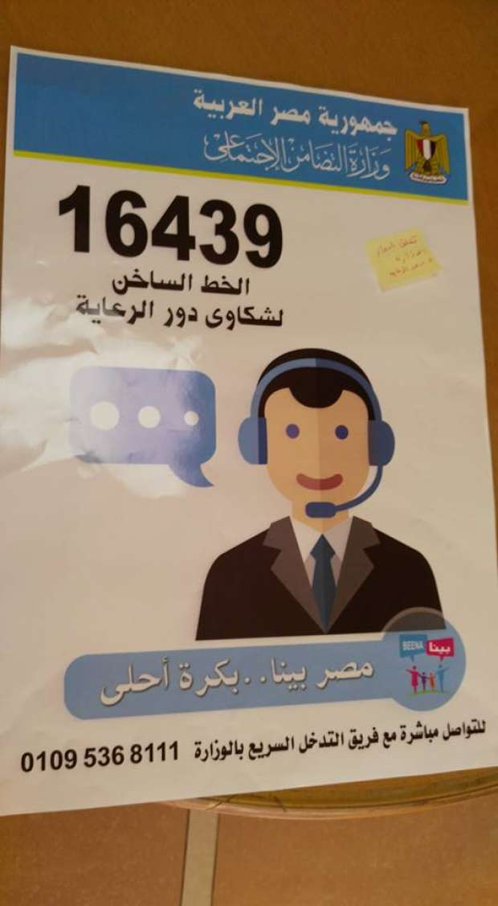

أحدث الأخبار
- الزمالك يكتسح رينجرز النيجيري بأربعة أهداف مقابل هدف وحيد
- القضاء الإداري يقضي بحل اتحاد الكرة وبطلان الانتخابات الأخيرة
- مقتل 3 أشخاص وإصابة 3 آخرين في حادث مروري بالبحيرة
- وزير الخارجية يجري اتصالاً مع رئيس المجلس الرئاسي الليبي
- عاصمة مصر تتجه لزيادة سكانية نصف مليون العام الجاري
- باولو يقود هجوم الزمالك أمام رينجرز في دوري الأبطال
- المالية تعفي المطاعم غير السياحية من ضريبة القيمة المضافة بشروط
- "القضاء الإداري" يلزم الجامعة الأمريكية بتحصيل مصروفاتها بالجنيه المصري
مقابلة- مساعد وزيرة التضامن: هذه خطتنا لحماية الفتيات "في وضع الشارع"
د. مسعد رضوان، مساعد وزيرة التضامن الاجتماعي خلال مقابلة مع أصوات مصرية
قال مسعد رضوان، مساعد أول وزيرة التضامن الاجتماعي، إن هناك خصوصية للفتيات في خطة الوزارة لحماية الأطفال بلا مأوى كونهن الأكثر عرضة للخطر في الشارع.
ووقعت وزارة التضامن الاجتماعي وصندوق تحيا مصر بروتوكول تعاون، مطلع العام الجاري، حيث يقوم الصندوق بدعم برنامج الوزارة لعلاج ظاهرة الأطفال بلا مأوى، بتمويل قدره 113 مليونا و944 ألف جنيه.
ويستهدف البرنامج الحد من المشكلة في 10 محافظات تضم 80% من إجمالي الأطفال بلا مأوى على مستوى الجمهورية، والذين حصرت أعدادهم بنحو 16 ألف طفل عام 2014.
وأضاف مسعد رضوان، مساعد أول وزيرة التضامن لشؤون الرعاية والتخطيط الاستراتيجي، في مقابلة مع أصوات مصرية، أن "الفتيات عرضة لخطر الاغتصاب في الشارع وبالتالي هن أكثر فئة معرضة لانتقال الأمراض، ونحن ننظر للفتاة على أنها مجني عليها ونعمل على توفير الكشوفات الصحية اللازمة لتقديم العلاج أو الخدمة المناسبة لحالتها".
وأشار إلى وجود مراكز "رعاية الأمهات الصغيرات" لاستقبال حالات الحمل، قائلا "نحن ملتزمون بتوفير بيئة آمنة وأماكن لإقامة الأمهات الصغيرات يتم رعايتها فيها حتى تلد طفلها كما نساعدها على أخذ الحقوق القانونية لوليدها".
وهناك 6.5% من الفتيات بلا مأوى قلن إن لديهن أبناء نتيجة علاقات حدثت خلال فترة إقامتهن في الشارع، من إجمالي 2646 من المبحوثات طبقا للحصر الذي أجري تحت إشراف وزارة التضامن الاجتماعي عام 2014.
وقالت 88% من المبحوثات إنهن غير متزوجات و9% متزوجات و1% رفضن الإجابة و2% غير مبين.
وتباينت طريقة تعامل الفتيات مع أطفالهن بين إيداعهم بأحد الملاجىء وبين تبنيهم من قبل أشخاص وتسريحهم للتسول وهناك من رفضن الإجابة.
وتتضمن خطة وزارة التضامن الاجتماعي تشكيل 17 فريقا للعمل بالشارع في أنحاء المحافظات العشر، ويتنقل داخل سيارات للتدخل السريع وتقديم الخدمات الأساسية العاجلة للأطفال.

طفل ينام داخل كرتونة في الشارع -صورة لأصوات مصرية
وقال رضوان إن بداخل كل سيارة سيتواجد ممرض وأخصائيون نفسيون واجتماعيون، وهناك حرص على أن تكون بينهم فتاة أو سيدة على الأقل للتعامل مع الفتيات.
وأشار إلى أن خطة الوزارة تضمنت تطوير مبني فتيات العجوزة المخصص لإيواء الفتيات.
*تطوير دور الرعاية
وتتضمن الخطة تقييم دور الرعاية المخصصة لاستقبال الأطفال بلا مأوى على مستوى الجمهورية وعددهم 37 دارا، وتطوير قدراتهم وتطوير البرامج والأنشطة المتعلقة بتأهيل الأطفال وكذلك تطوير البنية التحتية والتجهيزات لـ 6 مؤسسات من بينهم.
وقال مساعد أول وزيرة التضامن إن الأطفال يهربون من مؤسسات الرعاية لعدم توافر وسائل جذب بداخلها تقنعهم بمغادرة الشارع، حيث لا تتجاوز نسبة الإشغال بها 37% من إجمالي سعتها التي تستوعب نحو 4 آلاف طفل، بحسب رضوان.
ولا يفضل 88% من الأطفال بلا مأوى الذهاب إلى دور الرعاية طبقا لحصر عام 2014.
وأضاف رضوان "الطفل حين يذهب لا يجد إخصائيا مؤهلا، ويتم التعامل معه على أنه طفل شارع، ويضطر فجأة للاستيقاظ والنوم في أوقات معينة بعدما كان يدخن السجائر ويتناول المخدرات ويمارس الجنس أحيانا ولهذا يهرب من المؤسسة ويعود للشارع".
وأشار مساعد الوزيرة إلى عملهم مع مؤسسات الرعاية لتطوير الأنشطة والبرامج لجذب الأطفال وتطوير بنيتها التحتية، قائلا "وجدنا أن الطفل ينصرف عن السجائر حين يتم دمجه في أنشطة جاذبة وحدث ذلك خلال دوري (لاعيبة بلادنا) وهي مسابقة كروية نظمناها بين أطفال المناطق العشوائية".
وطبقا لحصر أطفال الشوارع في مصر عام 2014 قال 36.9% من الأطفال بلا مأوى إنهم يدخنون السجائر، و5.3% يتعاطون الحشيش وأقر 5.5% بأنهم يتعاطون البرشام و4.1% يتعاطون البانجو، فيما رفضت النسبة المتبقية الإجابة أو نفت.
وقال رضوان إن ما يميز خطة الوزارة الحالية عن أي جهود سابقة تمت للقضاء على ظاهرة الأطفال بلا مأوى هو التكامل بين كل الجهات المعنية والنظرة الشاملة لكل أبعاد وأسباب الظاهرة والبناء على الجهود السابقة.
* التفاوت في حصر الأطفال بلا مأوى
وعن سبب التفاوت الكبير بين الرقم الرسمي المعلن من قبل الوزارة للأطفال بلا مأوى (16 ألف طفل) والأرقام الصادرة عن بعض الجهات الأخرى مثل التقرير السنوي لوزارة الخارجية الأمريكية عن حالة "الإتجار بالبشر" لعام 2015، والذي قدر عدد أطفال الشوارع في مصر ما بين 200 ألف ومليون طفل قال رضوان إنها أرقام تبتعد عن الحقيقة.
وأضاف "الرقم مينفعش يكون 2 مليون دي دولة! وتقارير الخارجية الأمريكية أو اليونيسكو بتعتمد على مصادر غير رسمية مفادها توقعات أو تخمينات بعض منظمات المجتمع المدني في مصر، وبعض الأرقام التي تواترت وثبت عدم صحتها، وعلى الجهات الأخرى أن تصحح أرقامها".
وأشار إلى أن الرقم الذي أعلنته الوزارة لعدد الأطفال على مستوى الجمهورية يتفق مع الدراسات المسحية التي أجريت على بعض المحافظات من قبل، وقال إن هناك احتمالات لوصول العدد إلى ما بين 20 إلى 22 ألفا كحد أقصى نظرا لأي خطأ معياري خلال الدراسة.
كما أشار إلى ضرورة التفرقة بين الطفل الذي يعيش في الشارع وبين الطفل الذي يتسول ويعود إلى منزله في نهاية اليوم.
*دور المسنين لا تصلح للمعيشة
وردا على التقرير الصادر عن الجهاز المركزي للمحاسبات في يوليو الماضي والذي قال إن بعض دور المسنين لا تصلح للمعيشة وينقصها الخدمات وإن عددا من المحافظات تخلو من الدور قال مساعد وزير التضامن لشؤون الرعاية الاجتماعية إنه يتفق مع ما أورده تقرير الجهاز.
وأشار إلى أن وزارة التضامن بدأت منذ عام 2014 بعمل حصر لدور الأيتام والمسنين وتقييم حالة كل دار قائلا "لقينا أن الدور اللي حالتها جيدة وممتازة ميعدوش 25% ونسبة الدور الضعيفة تتجاوز 70% وعملنا خطة إزاي نطور، وقدمنا مقترح مشروع لصندوق إعانة الجمعيات للتطوير بتمويل قدره 23 مليون جنيه (11 مليون لدور الأيتام و12 مليون لدور المسنين).
كما أشار رضوان إلى أن المشروع يتضمن تطوير البنية التحتية لعدد 50 دار أيتام و50 دار مسنين، قائلا "مش هنبني ديارا جديدة لأن نسبة الإشغال في دور الرعاية 68% فمش عاوز دور جديدة إنما محتاجين نطور اللي موجود ومساعدة الدور بتعين جهاز تنظيمي محترف لمدة سنتين".
ويبلغ عدد دور الأيتام في مصر 472 دارا، تتسع لنحو 14 ألف طفل، ويتواجد بها 9 آلاف و468 طفلا.
ووفقا لتقييم وزارة التضامن الاجتماعي لأوضاع هذه الدور والممارسات التي تتم بها خلال عام 2015 حصلت 143 دارا على تقييم "ضعيف" و251 دارا على تقييم "متوسط" وصنفت 40 دارا بأنها "جيدة" و6 دور فقط صنفت بأنها "جيدة جدا".
ويبلغ عدد دور المسنين 168 وتسع 4997 مسنا، ويتواجد بها فعليا 3405 مسنين بنسبة إشغال 68.14%.
وفي مؤشرات تقييم وزارة التضامن الاجتماعي لدور رعاية المسنين لنفس العام حصلت 29 دارا على تقييم "ضعيف" و74 دارا على تقييم "متوسط" وصنفت 41 دارا بأنها "جيدة " و21 دارا بأنها "جيدة جدا" و3 دور فقط صنفت "ممتازة".
وقال رضوان "أسهل حاجة عليا كمساعد أول وزير عشان أرضي الرأي العام والإعلام أصدر قرارا بتحويل دار كذا للنيابة وأقفل دار كذا لكن ده غلط".
وأضاف "بعد ما أوديهم النيابة مين هيقعد مع الأولاد بس ده مش معناه إن اللي غلط ميتحاسبش لكن بعد ما أتأكد إن أنا ساعدته، مينفعش أحاسب دار معندهمش فلوس يجيبوا إخصائي اجتماعي".
وتابع "الحملات الإعلامية صورت الدور على أنهم دور الشواذ وإن الإخصائيين بياكلوا فلوس الأولاد فالناس بدأت تحجم عن التبرعات، وبعض الحالات كانت صحيحة لكن مكنش ينفع يتم التعامل معاها بهذا الشكل".
وأشار إلى قيام الوزارة بعمل 272 حالة تدخل في دور الرعاية قدمت ضدها شكاوى وتم إغلاق 12 دارا بين عامي 2014 و2015.
وأشار إلى توزيع ملصقات تتضمن رقما لاستقبال الشكاوى على كل دور الرعاية وبالنوادي والأماكن العامة.

الأرقام المخصصة لاستقبال الشكاوى الخاصة بدور الرعاية- أصوات مصرية
وأكد رضوان "التدخلات السهلة هي الفصل والتحويل للنيابة، والأصعب إنك توقف الدار على رجلها تاني، وفيه فرق بين المخالفة في واحد بيسرق أو بيعذب الأطفال وبين قصور نتيجة أن مفيش فلوس".
وأشار إلى أن بعض المحافظات لا يوجد بها دور مسنين لأن ثقافتها ترفض إيداع كبار السن في مثل هذه الدور مثل محافظات سوهاج ومطروح وشمال وجنوب سيناء، قائلا "عملنا من فترة دار مسنين في مطروح ومحدش راحها فحولناها لدار أيتام".
الاخبار المتعلقة


{kind=link}
تعليقات الفيسبوك